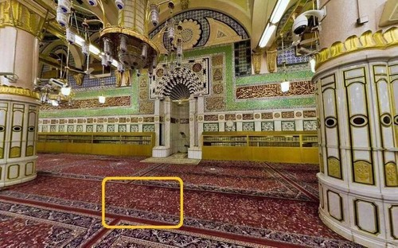

Abdullah bin Abbas radhiallahu ‘anhuma mengisahkan kepada kita tentang saat-saat terakhir kehidupan Umar bin al-Khattab radhiallahu ‘anhu:
Aku menemui Umar setelah ia terluka karena ditikam. Kukatakan padanya, “Bergembiralah dengan surga wahai Amirul Mukminin. Engkau memeluk Islam ketika orang-orang masih kufur. Engkau berjihad bersama Rasulullah ﷺ ketika orang-orang tidak membelanya. Saat Rasulullah ﷺ wafat, beliau ridha padamu. Tidak terjadi perselisihan (sengketa) pada masa kekhalifahanmu. Dan engkau wafat dalam keadaan syahid.”
Ia menanggapi ucapanku dengan mengatakan, “Ulangi apa yang kau ucapkan.” Aku pun mengulanginya.
Kemudian ia menjawab, “Demi Allah, yang tidak ada sesembahan yang benar kecuali Dia. Sekiranya aku memiliki emas dan perak sepenuh bumi, niscaya akan kutebus (agar selamat) dari sesuatu yang menakutkan (kiamat).”
Dalam riwayat al-Bukhari, Umar mengatakan, “Perkataanmu, aku menjadi sahabat Rasulllah ﷺ dan ia ridha padaku. Itu semua karunia dari Allah Jalla Dzikruhu yang Dia berikan padaku. Kesedihanku yang kau saksikan adalah karena engkau dan sahabat-sahabatmu. Demi Allah, seandainya aku memiliki emas sepenuh bumi, pasti akan kutebus diriku agar selamat dari adzab Allah ﷻ. Sebelum aku menyaksikan adzab itu.”
Maksud dari engkau dan sahabat-sahabatmu adalah kalian semua rakyatku. Aku diminta pertanggung-jawaban atas kalian. Itu yang membuatku sedih.
Orang yang menyaksikan pemerintahan Umar dan juga membaca sejarah hidupnya, bersaksi bahwa Umar adalah pemimpin yang adil. Rasulullah ﷺ menyebutkan 7 golongan yang dilindungi oleh Allah ﷻ di padang mahsyar, di antaranya adalah pemimpin yang adil. Dan beliau ﷺ secara langsung menyebutkan, “Umar di dalam surga”. Namun hati Umar tidak lengah karena itu semua. Ia tetap takut kepada Allah. Takut akan tanggung jawab yang dipinta di hari kiamat. Sikap Umar bukan hanya sebuah bacaan. Bukan juga bahan untuk membanding-bandingkan. Apalagi mengukur dan mencela orang lain. Renungkan untuk diri kita sendiri. Umar saja demikian, mestinya kita lebih-lebih lagi. Karena di akhirat, Allah memintai pertanggung-jawaban masing-masing. Kita tidak ditanya tentang apa yang orang lain lakukan.
Utsman bin Affan radhiallahu ‘anhu berkisah mengenang Umar bin al-Khattab:
Aku termasuk yang terakhir menjenguk Umar. Aku masuk menemuinya. Saat itu kepalanya berada di pangkuan anaknya, Abdullah bin Umar. Umar berkata, “Letakkan saja kepalaku di tanah!” “Bukankah sama saja, di pahaku atau di tanah”, jawab Abdullah. Umar mengulangi perintahnya, “Letakkan pipiku di tanah, celaka engkau!” dia mengatakan itu yang kedua atau yang ketiga.
Kemudian Umar merapatkan kedua kakinya, “Celaka aku dan celaka ibuku, kalau Allah belum juga mengampuniku.” Kemudian ruhnya berpisah dari jasadnya. (HR. al-Bukhari dalam Kitab Fadhail ash-Shahabah, No. 3692).
Sampai tingkat seperti ini rasa khasy-yah (takut) Amirul Mukminin Umar radhiallahu ‘anhu kepada Allah Yang Maha Mulia. Akhir ucapannya adalah doa. ‘Alangkah celaka dan rugi kiranya ampunan Sang Maha Penyayang belum aku dapatkan’. Rasa takut dan khawatirnya hingga detik-detik menjelang ajal. Ia hinakan diri di hadapan Allah. Tak mau mengemis kepada Allah dalam keadaan dimuliakan. Ia pinta putranya meletakkan kepalanya di tanah, jangan dipangku. Agar doa itu lebih mungkin untuk diterima. Tergambar di benak kita, alangkah hebatnya usaha Umar menghadirkan Allah dalam hatinya.
Tempat Umar ditikam oleh Abu Lu’lu’ah al-Majusi
Tanggal Wafat
Imam adz-Dzahabi rahimahullah mengatakan, “Umar syahid pada hari Rabu, saat bulan Dzul Hijjah tersisa 4 atau 3 hari saja. Tahun 23 H. Saat itu umurnya 63 tahun. Kekhilafahannya berlangsung selama 10 tahun, 6 bulan, dan beberapa hari.
Termaktub dalam Tarikh Abi Zur’ah, dari Jarir bin Abdillah al-Bajaly, ia mengatakan, “Aku pernah bersama Muawiyah. Ia berkata, ‘Rasulullah ﷺ wafat pada usia 63 tahun. Abu Bakar wafat juga di usia 63 tahun. Dan Umar syahid juga di usia 63 tahun.” (Riwayat Muslim dalam Fadhail ash-Shahabah, No. 2352).
Prosesi Pemandian Jenazah
Dari Abdullah bin Umar radhiallahu ‘anhuma, “Ia dimandikan dan dikafani. Kemudian dishalatkan. Dan ia wafat dalam keadaan syahid.” (ath-Thabaqat, 3/366. Sanadnya shahih).
Para ulama berbeda pendapat tentang seseorang yang dibunuh secara zalim. Apakah statusnya seperti seorang yang syahid (di medan perang), dimandikan atau tidak. Yang berpendapat dimandikan, mereka berdalil dengan dimandikannya Umar bin al-Khattab ini. Pendapat kedua: tidak dimandikan dan dishalatkan. Mereka juga berdalil dengan kisah Umar. Umar masih hidup beberapa hari setelah ditikam. Masih diberi makan dan minum. Berbeda halnya dengan orang-orang yang mati syahid dalam peperangan (al-Inshaf oleh al-Murdawai, 2/503 dan Mahadh ash-Shawab, 3/844/845).
Shalat Jenazah
Imam adz-Dzhabai mengatakan, “Shuhaib bin Sinan menjadi imam shalat jenazah Umar”.
Ibnu Saad mengatakan, “Ali bin al-Husein bertanya kepada Said bin al-Musayyib, ‘Siapa yang menjadi imam shalat jenazah Umar?’ “Shuhaib bin Sinan,” jawab Said. “Dengan berapa takbir?” Ali bin al-Husein kembali bertanya. “Empat,” jawab Said. “Dimana dia dishalatkan?” tanya Ali lagi. “Antara kubur Nabi dan mimbar beliau,” jawab Said.
Kemudian Said bin al-Musayyib menjelaskan mengapa yang dipilih menjadi imam adalah Shuhaib bin Sinan. Bukan enam orang sahabat yang utama yang ada saat itu. “Kaum muslimin memandang, apabila Shuhaib menjadi imam dalam shalat wajib atas perintah Umar, tentu dia layak dikedepankan menjadi imam shalat jenazahnya. Umar tidak melebihkan salah seorang dari enam sahabat yang ditunjuk untuk bermusyawarah dalam permasalahan khilafah. Sehingga orang-orang tidak menyangka, ia mengutamakan salah satunya.” jelas Said bin al-Musayyib (ath-Thabaqat, 3/366).
Shuhaib ditunjuk menjadi imam shalat menggantikan Umar, 3 hari menjelang wafatnya. Ia dipilih menjadi imam, bukan salah satu dari enam orang ahli syura, agar orang-orang tidak langsung menunjuk salah satu darimenjadi khalifah tanpa musyawarah. Enam orang tersebut adalah: Utsman bin Affan, Ali bin Abi Thalib, Abdurrahman bin Auf, Saad bin Abi Waqqash, az-Zubair bin al-Awwam, dan Thalhah bin Ubaidillah radhiallahu ‘anhum.
Ada satu orang sahabat lagi yang termasuk orang yang diridhai oleh Rasulullah ﷺ. Ia juga termasuk 10 orang yang dijamin surga. Namun tidak disertakan Umar dalam musyawarah. Dialah Said bin Zaid radhiallahu ‘anhu. Barangkali Umar khawatir, Said akan ditunjuk sebagai penggantinya karena kedekatan hubungan keluarga. Said bin Zaid adalah adik ipar Umar bin al-Khattab.
Prosesi Pemakaman
Adz-Dzhabi mengatakan, “Umar dimakamkan di kamar Nabi”.
Ibnul Jauzi menyebutkan riwayat dari Jabir. Jabir mengatakan, “Utsman, Said bin Zaid, Shuhaib, dan Abdullah bin Umar adalah orang-orang yang turun memasukkan Umar ke liang makamnya.”
Pada tahun 88-91 H, di zaman pemerintahan al-Walid bin Abdul Malik, Masjid Nabawi mengalami perluasan. Dan rumah Aisyah dimasukkan dalam pelebaran. Ada suatu kejadian yang menunjukkan benarnya sabda Rasulullah ﷺ bahwa jasad orang yang syahid tidak hancur. Dari Hisyam bin Aurah, ia berkata, “Ketika tanah kubur (kubur Nabi ﷺ, Abu Bakar, dan Umar radhiallahu ‘anhuma) runtuh karena pemugaran di zaman pemerintahan al-Walid bin Abdul Malik. Tampaklah satu kaki. Orang-orang pun merasa takut. Mereka khawatir kalau itu kaki Nabi ﷺ. Tak ada seorang pun di antara mereka yang tahu kaki siapa itu. Lalu Aurah bin az-Zubair (ulama tabi’in) berkata kepada mereka, ‘Tidak, demi Allah, itu bukan kaki Nabi ﷺ. Itu adalah kakinya Umar radhiallahu ‘anhu’.”
Kita ketahui bahwa Umar meminta izin kepada Aisyah agar dikubur bersama kedua sahabatnya. Dan Aisyah lebih mendahulukan Umar dari dirinya. Padahal ia ingin dimakamkan bersama suaminya (Rasulullah ﷺ) dan ayahnya (Abu Bakar). Hisyam bin Aurah bin az-Zubair mengatakan, “Apabila ada seorang sahabat yang meminta izin lagi dengannya, Aisyah mengatakan, ‘Demi Allah, aku tidak mengutamakan seorang pun lagi’.” (HR. al-Bukhari dalam Kitab al-Janaiz No. 1326).
Tidak ada perbedaan pendapat ulama, bahwa kubur-kubur yang berada di Masjid Nabawi adalah kubur Rasulullah ﷺ, Abu Bakar, dan Umar.
Persahabatan Sejati Hingga Mati
Ibnu Abbas radhiallahu ‘anhuma mengatakan, “Umar diletakkan di atas tempat tidurnya. Lalu orang-orang mengkafaninya. Setelah itu mereka mendoakan dan menyalatkannya. Sebelum jasadnya dibopong -saat itu aku berada di antara mereka-, ada seseorang yang memegang pundakku. Ternyata Ali bin Abi Thalib. Ia bersedih dengan meninggalnya Umar. Ia mengatakan, “Tak ada seorang pun yang aku ingin berjumpa dengan Allah, memiliki amalan seperti yang telah ia perbuat, kecuali engkau (wahai Umar). Aku percaya, Allah akan mengumpulkanmu bersama dua orang sahabatmu. Karena aku sering mendengar Nabi ﷺ mengatakan, ‘Aku pergi bersama Abu Bakar dan Umar. Aku masuk bersama Abu Bakar dan Umar. Dan Aku keluar bersama Abu Bakar dan Umar’(Riwayat al-Bukhari dalam Kitab Fadhail ash-Shahabah No. 3482).
Inilah persahabatan sejati. Rasulullah ﷺ, Abu Bakar, dan Umar selalu bersama dalam kehidupan. Kemudian Allah bersamakan mereka dengan dekatnya liang kuburan. Di akhirat Allah kumpulkan mereka dalam surganya. Semoga kita juga dikumpulkan bersama mereka.
Duka Atas Wafatnya Umar
Peristiwa wafatnya Umar adalah duka yang begitu mengejutkan. Kematiannya tidak didahului sakit yang ia derita. Kesedihan itu kian bertambah, karena Umar bersama mereka, mengimami mereka shalat. Tentu kepergiannya benar-benar menancapkan duka di jiwa.
Amr bin Maimun mengatakan, “…seolah-olah masyarakat tidak pernah mengalami musibah sebelum hari itu”.
Ibnu Abbas bercerita tentang keadaan orang-orang setelah Umar terluka, “Sungguh tidak dilewati seseorang kecuali mereka menangis. Seolah-olah mereka kehilangan anak-anak mereka yang masih kecil”. Ibnu Abbas menggambarkan duka dan tangisan mereka dengan kehilangan seorang anak kecil. Usia anak saat sedang lucu-lucunya. Jika mereka tiada, maka akan begitu kehilangan rasanya. Itulah ekspresi kesedihan masyarakat tatkala mendengar kabar bahwa Umar sedang kritis.
Abdullah bin Mas’ud radhiallahu ‘anhu, apabila diceritakan tentang Umar, maka ia menangis. Air matanya berbulir-bulir menetes. Ia mengatakan, “Sesungguhnya Umar adalah benteng umat Islam. Mereka masuk dan tidak akan keluar dari benteng itu (maksudnya aman). Ketika ia wafat, benteng itu pun pecah. Orang-orang keluar dari Islam.” Artinya dengan wafatnya Umar, muncul perpecahan dan aliran-aliran sesat. Orang-orang keluar dari bimbingan Islam.
Sebelum Umar terbunuh, Abu Ubaidah Ibnul Jarah radhiallahu ‘anhu mengatakan, “Jika Umar wafat, maka Islam akan (mulai) mundur. Dan aku tidak ingin merasakan kehidupan setelah wafatnya Umar”. Kemudian ada yang bertanya, “Mengapa?” “Kalian akan menyaksikan sendiri kebenaran ucapanku, jika usia kalian panjang. Pemimpin setelah Umar meskipun mengambil hal yang sama dengan Umar, mereka tidak akan ditaati. Dan orang-orang tidak mendukungnya. Jika mereka lemah, maka mereka akan diperangi.” (ath-Thabaqat al-Kubra, 3/284).
Maksudnya, pemimpin setelah Umar, meskipun mereka berhukum dengan Alquran dan Sunnah. Sama seperti Umar. Mereka tetap tidak akan ditaati bahkan tidak didukung penuh. Karena mulai muncul pemahaman yang berbeda terhadap Alquran dan Sunnah. Muncul pemikiran-pemikiran sesat. Dan apa yang diucapkan Abu Ubaidah sangat tampaknya nyata. Terlebih di zaman kita. Orang yang berusaha menempuh jalan Umar, berhukum dengan hokum syariat, akan ditentang. Ketika kekuasaan mereka lemah, mereka akan diberontak.
Sumber: Tulisan Ali ash-Shalabi yang berjudul Istisyhad Umar bin al-Khattab radhiallahu ‘anhu.